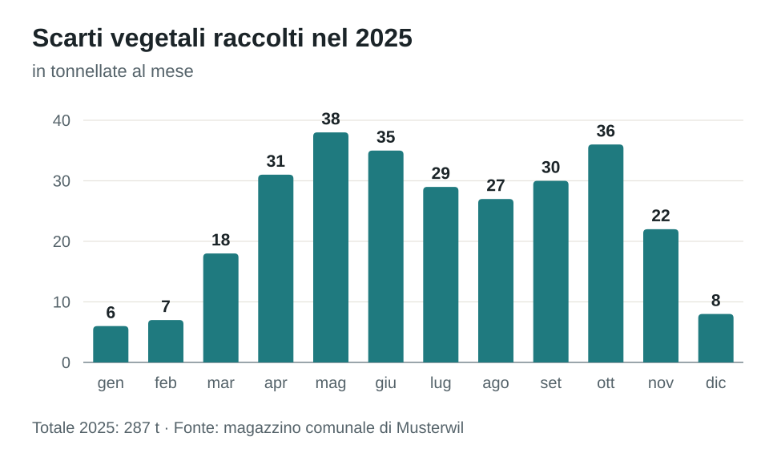

Calendario dei rifiuti 2026
Date di raccolta, punti di raccolta e tasse del Comune di Musterwil.
Vi preghiamo di depositare i sacchi dei rifiuti e i contenitori degli scarti vegetali a bordo strada il giorno della raccolta, entro le 7. I sacchi tassati sono in vendita nel negozio del paese, nella panetteria in piazza e presso l’amministrazione comunale.
Date di raccolta 2026
Le date di novembre in un colpo d’occhio:
| lu | ma | me | gi | ve | sa | do |
|---|---|---|---|---|---|---|
| 1 | ||||||
| 2 | 3 | 4 | 5 | 6 | 7 | 8 |
| 9 | 10 | 11 | 12 | 13 | 14 | 15 |
| 16 | 17 | 18 | 19 | 20 | 21 | 22 |
| 23 | 24 | 25 | 26 | 27 | 28 | 29 |
| 30 |
- Rifiuti domestici
- Scarti vegetali
- Carta
- Cartone
Scarti vegetali: quantità raccolte nel 2025
La quantità di scarti vegetali varia molto con le stagioni. In inverno la raccolta avviene quindi solo ogni due settimane.

Punti di raccolta
| Punto di raccolta | Cosa si accetta | Orari |
|---|---|---|
| Magazzino comunale Moosmatt | Scarti vegetali, ingombranti, metalli, apparecchi elettrici | Me 13.30–17.00, sa 09.00–12.00 |
| Punto di raccolta stazione | Vetro, alluminio, latta | Lu–sa 07.00–20.00 |
| Scuola Moosmatt | Abiti e scarpe usati | Sempre (container) |
Prossime raccolte
- Martedì 20 ottobre: rifiuti domestici
- Giovedì 22 ottobre: scarti vegetali
- Mercoledì 28 ottobre: carta